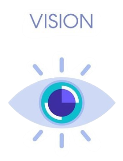

About us
Software engineering is one of the most important modern disciplines that has emerged to keep pace with the
rapid development of information technology, software analysis and design.
Software Engineering Program at the Faculty of Computing and Artificial Intelligence, Helwan University;
He works on developing plans and programs to deal with this development, and to provide the best in practical
and theoretical terms.
The study in the program is more comprehensive than other departments, so that the student becomes more familiar
with everything related to program projects ranging from their requirements to analysis, development, testing
and maintenance, so that the student can work at any stage of software development;
As well as different types of programs.
The program also aims to link the student to the market from the beginning of admission to the program, and
appropriate training is provided for each level from the first level through major software companies, which
positively affected students at the program in recent years.
Provide relevant technical education and training to support student goals, a skilled workforce, and the economic vitality of our communities.
Create an environment that supports the professional and personal growth of students and that prepares them for successful professional careers in the fields of software design and development and computer science through: Preparing flexible curricula that can be adapted to match the individual career goals of each student. Providing the student with a strong theoretical and practical background in computer science with an emphasis on software design and development. Instilling into the students a strong awareness of their ethical and professional responsibilities. Providing the students with a rich set of practical skills that render them fully prepared for employment upon graduation. Providing the students with the skills necessary to further their education and develop their skills after graduation.
To inculcate professional skills in our students to be the best in the veteran techie.
and To create a pro-active environment, conducive for overall professional growth.
and also to Enhance students analytical outlook for strategic decision making in the global and International business scenario.
A catalyst in engaging partners to bring innovative educational solutions to individuals, employers, and communities – transforming challenges into opportunities.
Enrich and serve the society by providing creative graduates with a high level of skills and qualifications in computer science and software design & development. These graduates endeavor to achieve a regional leadership role for the nation in the fields of science and technology. They are globally competitive and keen to contribute in improving the quality of life for humankind.

Integrity — We value responsible, accountable, ethical behavior in an atmosphere of honest, open communication, and with mutual respect.
Collaborative Partnerships — We value partnerships with business, industry, labor, government, educational systems, and our communities.
Innovation — We value creativity, responsible risk-taking, and enthusiastic pursuit of new ideas.
Sustainability — We value the responsible use of resources to achieve balance among social, economic, and environmental practices.
Provide relevant technical education and training to support student goals, a skilled workforce, and the economic vitality of our communities.
Create an environment that supports the professional and personal growth of students and that prepares them for successful professional careers in the fields of software design and development and computer science through: Preparing flexible curricula that can be adapted to match the individual career goals of each student. Providing the student with a strong theoretical and practical background in computer science with an emphasis on software design and development. Instilling into the students a strong awareness of their ethical and professional responsibilities. Providing the students with a rich set of practical skills that render them fully prepared for employment upon graduation. Providing the students with the skills necessary to further their education and develop their skills after graduation.
To inculcate professional skills in our students to be the best in the veteran techie.
and To create a pro-active environment, conducive for overall professional growth.
and also to Enhance students analytical outlook for strategic decision making in the global and International business scenario.